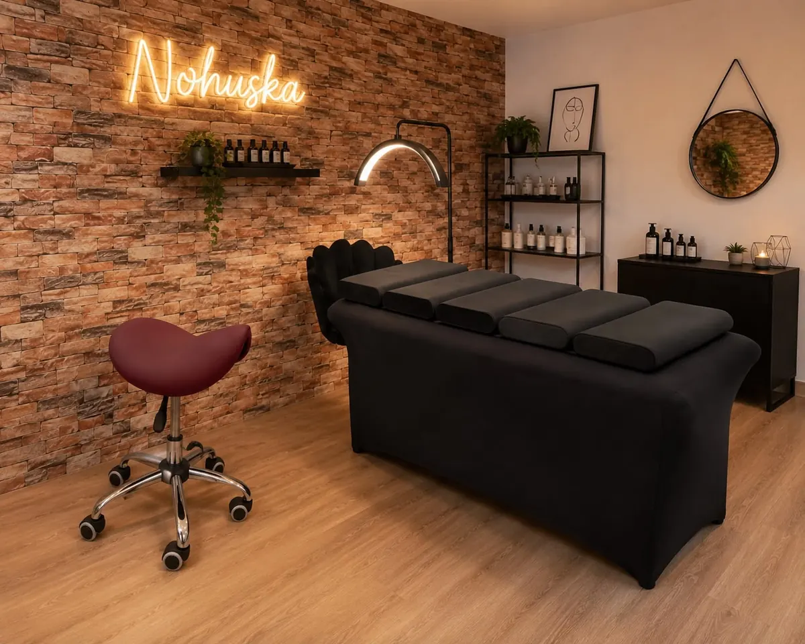

Belleza natural · Granollers
Centro de estética especializada en Granollers
Nohuska Beauty Lab reúne micropigmentación, diseño de cejas, pestañas, freckles y cuidado facial en un espacio especializado de Granollers.
Consultar tratamiento
Estética con diagnóstico y diseño.
Nos centramos en tratamientos de rostro y mirada que requieren precisión, conocimiento de la piel y un diseño adaptado a cada persona. En la valoración explicamos qué puede aportar cada técnica, cómo es el proceso y qué cuidados necesita.
El centro atiende con cita previa para reservar el tiempo necesario y evitar recomendaciones genéricas.
Especialidades Nohuska
Centro de estética en Granollers.
Estamos en Avinguda Sant Esteve, 40, 08402 Granollers. Horario habitual: lunes a sábado, de 10:00 a 20:00, con cita previa.
Atendemos a personas de Granollers, el Vallès Oriental y otros puntos de la provincia de Barcelona.
¿No sabes qué reservar?
Cuéntanos qué te gustaría mejorar y te indicaremos qué servicio encaja mejor. No es necesario escoger una técnica antes de consultarnos.
Pedir orientaciónPreguntas sobre el centro
¿Dónde está Nohuska Beauty Lab?
En Avinguda Sant Esteve, 40, 08402 Granollers, Barcelona.
¿Qué tratamientos ofrece?
Micropigmentación, cejas, pestañas, freckles, labios, camuflaje de ojeras, capilar y cuidado facial, entre otros servicios especializados.
¿Es necesario reservar cita?
Sí. Trabajamos con cita previa para dedicar el tiempo de valoración y tratamiento necesario.